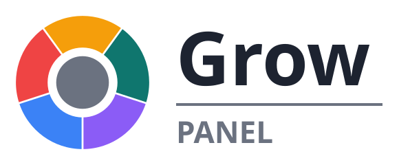

Grow Panel
Grow Panel

Agrupa apps Amables
📲 Instalar
Aún no has entrado con una cuenta.
Entra con tu cuenta de Google para ver lo mismo en el móvil y en el PC.
Entrar con Google
Ajustes
← Volver a Grow Panel
by Práctica Integral
with Grow Panel
Datos apps
Mi diario
Planes
Resumen IA
Ajustes